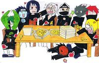
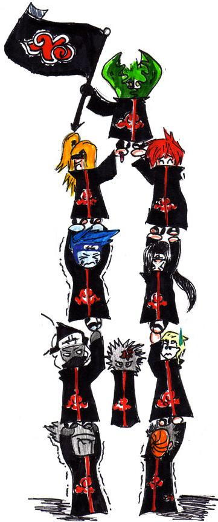
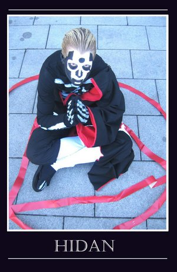

Jashinismo
 De: La Frikipedia, la enciclopedia extremadamente seria.
De: La Frikipedia, la enciclopedia extremadamente seria.
| De la serie tribus urbanas del mundo:
|
| Jashinismo
|
Ejemplo de la tribu

|
| Todos los ¿santos? del Jashinismo...
|
|
| Hábitat
|
Cuevas e iglesias marica-paganas
|
| Inteligencia
|
Inteligentes y habladores
|
| Frase favorita
|
¡Jashin! Protegenos del chico Dattebayo y su grupete del mal!
|
| ¿Peligroso?
|
Depende de que tan cabreados esten
|
| Obsesión
|
Violarse a quien tengan por delante
|
| Notas
|
Lo que importa es Jashin
|
También llamada "Peinismo", dicese de la religion/arte/estilo de vida/tribu urbana que adora al Glorioso San Pein y a sus discípulos, los hombres con cortinas de baño nubladas.
Inicio del Jashinismo
Todo comenzó cuando el Glorioso San Pein o también conocido como Jashin (era su seudónimo de travesti) tuvo un sueño zoofílico en el cual follaba con nueve zorras gigantes. Al despertar decidió ir en busca de esas nueve zorras para obligarlas a tener Sexo con él. Pero para ello necesitaba de unos esclavos sexuales discípulos confiables que lo follen día y noche ayuden en su búsqueda.  Algunas tonterías de los ¿santos? Jashinistas
Se cuenta que el Glorioso San Pein viajó haciendo dedo durante dos años para encontrar a sus seguidores. Y antes de encontrar a cada uno soñaba que comía algo relacionado con ellos: las llamadas Soñadas Comidas del Glorioso San Pein.
El demonio para los Jashinistas
El demonio se llama El Chico Dattebayo y está acompañado por sus discípulos: el Grupete del Mal. En la religión jashinista se considera la palabra "Dattebayo" como el peor insulto existente.
La Casa Jashinista
Es donde vive el Glorioso San Pein y sus discípulos. No se sabe bien donde está o si cambia de dirección a cada rato para evitar al demonio.  Jashinista cualquiera un viernes por la tarde
Las Soñadas Comidas del Glorioso San Pein y sus 10 discípulos
Hemos aquí la lista ordenada de las Comidas del Glorioso San Pein con el discípulo que encontró después de haber soñado:
- Un barquito de papel de periódico - Santa Konan
- Un cáctus - San Zetsu
- Una muñeca inflable - San Sasori
- Un televisor desarmado - San Itachi
- Una caja de cereales - San Tobi
- Un pescado podrido - San Kisame
- Una serpiente blanca - San Porrochimaru
- Una cadena con el símbolo gay universal - San Hidan
- Cinco corazones de vaca - San Kakuzu
- Una peluca rubia despeinada - San Deidara
- Patrona: De las papeleras y del color azul.
- Función en la historia Jashinista: Fue la amante del Glorioso San Pein, lo que le servía para
Follar entrenar con las nueve zorras.
- Patrono: De los invernaderos y viveros
- Función en la historia Jashinista: era el que cuidaba las plantas que le dejaban al Glorioso San Pein, además se encargaba de la supervivencia de diversas especies vegetales ayudando a la fornicación.
- Patrono: De las muñecas systems y marionetas
- Función en la historia Jashinista: era el encargado de entretener a todos con funciones pornográficas de marionetas en la Casa Jashinista, para ayudar a que todos los Santos se mantuviesen vírgenes y no cediesen a la tentación de volverse mortales pecadores cuando se cortaba la luz.
- Patrono: De los fabricantes de televisores ,
los emos, droga sexo el amor filial y la compasion
- Función en la historia Jashinista: era el que arreglaba la tele cuando no andaba, también
apoyaba el incesto con los hermanos pequeños emos y homosexuales ayudaba a los pobres mortales a exterminar a sus molestas familias blasfemas/paganas.
- Patrono: De los chicos buenos y de las galletas
- Función en la historia Jashinista: era el encargado de decirle al mundo que todos eran "buenos chicos" y dejarles galletas bajo sus almohadas; también castigaba
calcinándolos a los mortales que se portaban mal.
- Patrono: De los pescados y del
pis hagua
- Función en la historia Jashinista: era el encargado de lavar todo en la Casa Jashinista con el hagua que él mismo sabía emanar, y también era el protector de los animales acuáticos y de la lluvia ácida (el meo de San Kisame)
- Patrono: De los pedófilos y serpientes
- Función en la historia Jashinista: era el que elegía a los niños que follarían con el Glorioso San Pein, para luego devorarlos como castigo divino.
- Patrono: De los fanáticos religiosos y los metrosexuales
- Función en la historia Jashinista: era el encargado de proteger a los perseguidos homosexuales en la Tierra y de castigar a los pecadores atravesándolos con bayonetas bendecidas
en el culo en nombre del glorioso San Pein, para luego beber su sangre pecadora heterosexual.
- Patrono: De los corazones y del dinero
- Función en la historia Jashinista: era el encargado de traerle riquezas (dinero) al mundo a cambio de un riguroso culto en contra del santo San Hidan, el cual consistia en sacrificar a 10 mortales virgenes que jurasen
follar matar a San Hidan y entregar sus culos corazones a San Kakuzu.
- Patrono: De los artistas y de los travestis
- Función en la historia Jashinista: era el encargado de pintar la Casa Jashinista y de explotar a aquellos mortales que osasen burlarse de su travestida apariencia.
Autor(es):
- Khazike Khashondo
- Move Zig
- Lightblackheart
- Reybendayana
- Nury-chan
- Helloombark
- David Nano
- JoitaBandana
- Pbleras
- El.wey.que.no.sabe.nada
Frikipedia 2005-2016, Licencia
GFDL 1.2 - Extraído por FrikiLeaks